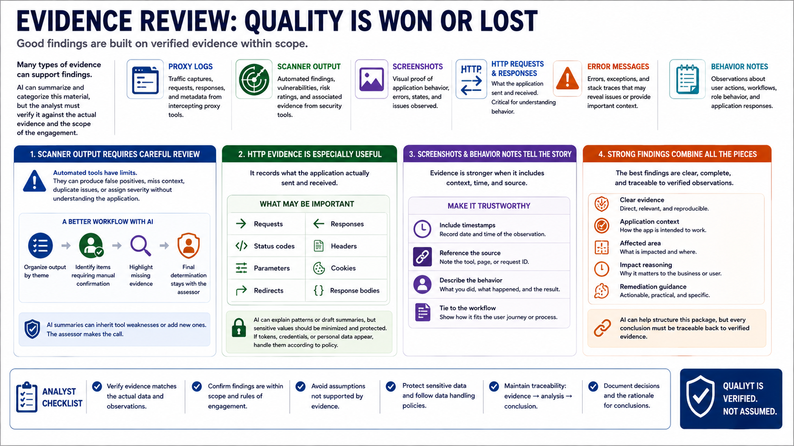

Reviewing Evidence and Tool Output
Connecting to LMS... Progress: in progress

Narration
Evidence review is where assessment quality is won or lost. Proxy logs, scanner output, screenshots, HTTP requests and responses, error messages, and behavior notes can all support findings. AI can summarize and categorize this material, but the analyst must verify that the summary matches the actual evidence and the scope of the engagement.
Scanner output requires careful review. Automated tools can produce false positives, miss context, duplicate issues, or assign severity without understanding the application. AI summaries can inherit those weaknesses or add new ones. A better workflow is to ask AI to organize output by theme, identify items requiring manual confirmation, and highlight missing evidence. The final determination stays with the assessor.
HTTP evidence can be especially useful because it records what the application actually sent and received. Requests, responses, status codes, headers, parameters, cookies, redirects, and response bodies may all matter. AI can help explain patterns or draft a plain-language summary, but sensitive values should be minimized and protected. If tokens, credentials, or personal data appear, handle them according to policy.
Screenshots and behavior notes help tell the story when they are tied to timestamps and source references. The strongest findings usually combine clear evidence, application context, affected area, impact reasoning, and remediation guidance. AI can help structure that package, but every conclusion should be traceable back to verified observations.